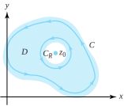

The Cauchy-Goursat theorem states that within certain domains the integral of an analytic function over a simple closed contour is zero. An extension of this theorem allows us to replace integrals over certain complicated contours with integrals over contours that are easy to evaluate. We demonstrate how to use the technique of partial fractions with the Cauchy-Goursat theorem to evaluate certain integrals. In Section 6.4 we show that the Cauchy-Goursat theorem implies that an analytic function has an antiderivative. To begin, we need to introduce some new concepts.
Recall from Section 1.6 that each simple closed contour \(C\) divides the plane into two domains. One domain is bounded and is called the interior of \(C\text{;}\) the other domain is unbounded and is called the exterior of \(C\text{.}\)Figure 6.3.1 illustrates this concept, which is known as the Jordan curve theorem.
Figure6.3.1.The interior and exterior of simple closed contours
Recall also that a domain \(D\) is a connected open set. In particular, if \(z_1\) and \(z_2\) are any pair of points in \(D\text{,}\) then they can be joined by a curve that lies entirely in \(D\text{.}\) A domain \(D\) is said to be a simply connected domain if the interior of any simple closed contour \(C\) contained in \(D\) is contained in \(D\text{.}\) In other words, there are no “holes” in a simply connected domain. A domain that is not simply connected is called a multiply connected domain. Figure 6.3.2 illustrates uses of the terms simply connected and multiply connected.
Figure6.3.2.Simply connected and multiply connected domains
Let the simple closed contour \(C\) have the parametrization \(C:z(t)=x(t) +iy(t)\) for \(a \le t \le b\text{.}\) Recall that if \(C\) is parametrized so that the interior of \(C\) is kept on the left as \(z(t)\) moves around \(C\text{,}\) then we say that \(C\) is oriented positively (counterclockwise); otherwise, \(C\) is oriented negatively (clockwise). If \(C\) is positively oriented, then \(-C\) is negatively oriented. Figure 6.3.3 illustrates the concept of positive and negative orientation.
Figure6.3.3.Positively and negatively oriented simple closed contours
Green’s theorem is an important result from the calculus of real variables. It tells you how to evaluate the line integral of real-valued functions.
Theorem6.3.4.Green’s theorem.
Let \(C\) be a simple closed contour with positive orientation and let \(R\) be the domain that forms the interior of \(C\text{.}\) If \(P\) and \(Q\) are continuous and have continuous partial derivatives \(P_x, \, P_y, \,Q_x\text{,}\) and \(Q_y\) at all points on \(C\) and \(R\) then
(We give a proof for a standard region, which is a region that is bounded by a contour \(C\) tha can be expressed in the two forms \(C=C_1+C_2\) and \(C=C_3+C_4\text{.}\)) If \(R\) is a standard region, then there exist functions \(y=g_1(x)\text{,}\) and \(y=g_2(x)\text{,}\) for \(a \le x \le b\text{,}\) whose graphs form the lower and upper portions of \(C\text{,}\) respectively, as indicated in Figure 6.3.5. As \(C\) is positively oriented, these functions can be used to express \(C\) as the sum of two contours \(C_1\) and \(C_2\text{,}\) where
\begin{align*}
{3} \amp C_1 : z_1(t) = t+ig_1(t), \amp \amp \text{ for } \amp \amp a \le t \le b, \text{ and }\\
\amp C_2 : z_2(t) = -t+ig_2(-t), \amp \amp \text{ for } \amp \amp -b \le t \le -a\text{.}
\end{align*}
We now use the functions \(g_1(x)\) and \(g_2(x)\) to express the double integral of \(-P_y(x,y)\) over \(R\) as an iterated integral, first with respect to \(y\) and second with respect to \(x\text{:}\)
To complete the proof, we rely on the fact that for a standard region there exist functions \(x=h_1(y)\) and \(x=h_2(y)\) for \(c \le y \le d\) whose graphs form the left and right portions of \(C\text{,}\) respectively, as indicated in Figure 6.3.6.
Figure6.3.6.Integration over a standard region, where \(C=C_3+C_4\)
Because \(C\) has positive orientation, it can be expressed as the sum of two contours \(C_3\) and \(C_4\text{,}\) where
\begin{align*}
{3} \amp C_3 : z_3(t) = h_1(-t) -it, \amp \amp \text{ for } \amp \amp -d \le t \le -c, \text{ and }\\
\amp C_4 : z_4(t) = h_2(t) +it, \amp \amp \text{ for } \amp \amp c \le t \le d\text{.}
\end{align*}
Using the functions \(h_1(y)\) and \(h_2(y)\text{,}\) we express the double integral of \(Q_x(x.y)\) over \(R\) as an iterated integral:
If we use the Cauchy-Riemann equations \(u_x=v_y\) and \(u_y=-v_x\) in Equations (6.3.5) and (6.3.6), Equation (6.3.4) becomes
\begin{equation*}
\int_Cf(z)\,dz = \iint\limits_R0\,dx\ dy +i\iint\limits_R0\,dx\,dy=0\text{,}
\end{equation*}
which completes the proof.
In 1883, Edward Goursat (1858-1936) produced a proof that does not require the continuity of \(f\,'\text{.}\)
Proof.
We first establish the result for a triangular contour \(C\) with positive orientation. We then construct four positively oriented contours \(C^1\text{,}\)\(C^2\text{,}\)\(C^3\text{,}\) and \(C^4\) that are the triangles obtained by joining the midpoints of the sides of \(C\text{,}\) as Figure 6.3.8 shows.
Figure6.3.8.The triangular contours \(C\) and \(C^1\text{,}\)\(C^2\text{,}\)\(C^3\text{,}\) and \(C^4\)
Each contour is positively oriented, so if we sum the integrals along the four triangular contours, the integrals along the segments interior to \(C\) cancel out in pairs, giving
Proceeding inductively, we carry out a similar subdivision process to obtain a sequence of triangular contours \(\{C_n\}\text{,}\) where the interior of \(C_{n+1}\) lies in the interior of \(C_n\) and the following inequality holds:
\begin{equation}
\left|\int_{C_n}f(z)\,dz\right| \le 4\left|\int_{C_{n+1}}f(z)\,dz\right|, \text{ for } n=1,\,2,\ldots\tag{6.3.8}
\end{equation}
We let \(T_n\) denote the closed region that consists of \(C_n\) and its interior. The length of the sides of \(C_n\) go to zero as \(n \to \infty\text{,}\) so there exists a unique point \(z_0\) that belongs to all the closed triangular regions \(\{T_n\}\text{.}\) Since \(D\) is simply connected, \(z_0\in D\text{,}\) so \(f\) is analytic at the point \(z_0\text{.}\) Thus, there exists a function \(\eta (z)\) such that
where \(L\) is the length of the original contour \(C\text{.}\) We can now choose an integer \(n\) so that \(C_n\) lies in the neighborhood \(z-z_0| \lt \delta\text{,}\) as shown in Figure 6.21.
Figure6.3.9.The contour \(C_n\) that lies in the neighborhood \(|z-z_0| \lt \delta\)
Since the distance between any point \(z\) on a triangle and a point \(z_0\) interior to the triangle is less than half the perimeter of the triangle, it follows that
\begin{equation*}
|z-z_0| \lt \frac{1}{2} L_n, \text{ for all } z \text{ on } C_n\text{,}
\end{equation*}
where \(L_n\) is the length of the triangle \(C_n\text{.}\) From the preceding construction process, it follows that
\begin{equation}
L_n=\left(\frac{1}{2}\right)^{\!n}L, \text{ and } |z-z_0| \lt \left(\frac{1}{2}\right)^{\! n+1}L, \text{ for } z \text{ on } C_n\text{.}\tag{6.3.11}
\end{equation}
Because \(\varepsilon\) was arbitrary, it follows that our theorem holds for the triangular contour \(C\text{.}\) If \(C\) is a polygonal contour, then we can add interior edges until the interior is subdivided into a finite number of triangles. The integral around each triangle is zero, and the sum of all these integrals equals the integral around the polygonal contour \(C\text{.}\) Therefore our theorem also holds for polygonal contours. The proof for an arbitrary simple closed contour is established by approximating the contour “sufficiently close” with a polygonal contour. We omit the details of this last step.
Example6.3.10.
Recall that \(\exp z\text{,}\)\(\cos z\text{,}\) and \(z^n\) (where \(n\) is a positive integer) are all entire functions. The Cauchy-Goursat theorem implies that, for any simple closed contour,
Let \(n\) be an integer. If \(C\) is a simple closed contour such that the origin does not lie interior to \(C\text{,}\) then there is a simply connected domain \(D\) that contains \(C\) in which \(f(z)=\frac{1}{z^n}\) is analytic, as is indicated in Figure 6.3.12. The Cauchy-Goursat theorem implies that \(\int_C\frac{1}{z^n}\,dz=0\text{.}\)
Figure6.3.12.A simple connected domain \(D\) containing the simple closed contour \(C\) that does not contain the origin
We want to be able to replace integrals over certain complicated contours with integrals that are easy to evaluate. If \(C_1\) is a simple closed contour that can be “continuously deformed” into another simple closed contour \(C_2\) without passing through a point where \(f\) is not analytic, then the value of the contour integral of \(f\) over \(C_1\) is the same as the value of the integral of \(f\) over \(C_2\text{.}\) To be precise, we state the following result.
Theorem6.3.13.Deformation of contour.
Let \(C_1\) and \(C_2\) be two simple closed positively oriented contours such that \(C_1\) lies interior to \(C_2\text{.}\) If \(f\) is analytic in a domain \(D\) that contains both \(C_1\) and \(C_2\) and the region between them, as shown in Figure 6.3.14, then
Figure6.3.14.The domain \(D\) that contains the simple closed contours \(C_1\) and \(C_2\) and the region between them
Proof.
Assume that both \(C_1\) and \(C_2\) have positive (counterclockwise) orientation. We construct two disjoint contours or cuts, \(L_1\) and \(L_2\text{,}\) that join \(C_1\) to \(C_2\text{.}\) The contour \(C_1\) is cut into two contours \(C_1^{\ast }\) and \(C_1^{\ast \ast }\text{,}\) and the contour \(C_2\) is cut into \(C_2^*\) and \(C_2^{\ast \ast}\text{.}\) We now form two new contours:
which are shown in Figure 6.3.15. The function \(f\) will be analytic on a simply connected domain \(D_1\) that contains \(K_1\text{,}\) and \(f\) will be analytic on the simply connected domain \(D_2\) that contains \(K_2\text{,}\) as illustrated in Figure 6.3.15.
Figure6.3.15.The cuts \(L_1\) and \(L_2\) and the contours \(K_1\) and \(K_2\) used to prove the deformation of contour theorem
We apply the Cauchy-Goursat theorem to the contours \(K_1\) and \(K_2\text{,}\) giving
\begin{equation}
\int_{K_1}f(z)\,dz=0 \text{ and } \int_{K_2}f(z)\,dz=0\text{.}\tag{6.3.12}
\end{equation}
We now state as a corollary an important result that is implied by the deformation of contour theorem. This result occurs several times in the theory to be developed and is an important tool for computations. You may want to compare the proof of Corollary 6.3.16 with your solution to Exercise 6.2.9 from Section 6.2.
Corollary6.3.16.
Let \(z_0\) denote a fixed complex value. If \(C\) is a simple closed contour with positive orientation such that \(z_0\) lies interior to \(C\text{,}\) then
\begin{equation*}
\int_C\frac{1}{z-z_0}\,dz = 2\pi i, \text{ and } \int_C\frac{1}{(z-z_0)^n}\,dz = 0\text{,}
\end{equation*}
where \(n\) is any integer except \(n=1\text{.}\)
Proof.
Since \(z_0\) lies interior to \(C\text{,}\) we can choose \(R\) so that the circle \(C_R\) with center \(z_0\) and radius \(R\) lies interior to \(C\text{.}\) Hence \(f(z)=\frac{1}{(z-z_0)^n}\) is analytic in a domain \(D\) that contains both \(C\) and \(C_R\) and the region between them, as shown in Figure 6.3.17.

Figure6.3.17.The domain \(D\) that contains both \(C\) and \(C_R\)
We let \(C_R\) have the parametrization
\begin{equation*}
C_R:z(\theta )=z_0+Re^{i\theta} \text{ and } dz =iRe^{i\theta}d\theta, \text{ for } 0 \le \theta \le 2\pi\text{.}
\end{equation*}
The deformation of contour theorem implies that the integral of \(f\) over \(C_R\) has the same value as the integral of \(f\) over \(C\text{,}\) so
\begin{equation*}
\int_C\frac{1}{z-z_0}\,dz = \int_{C_R}\frac{1}{z-z_0}\,dz =\int_0^{2\pi}\frac{iRe^{i\theta}}{Re^{i\theta}}\,d\theta =i\int_0^{2\pi}\,d\theta =2\pi i
\end{equation*}
The deformation of contour theorem is an extension of the Cauchy-Goursat theorem to a doubly connected domain in the following sense. We let \(D\) be a domain that contains \(C_1\) and \(C_2\) and the region between them, as shown in Figure 6.3.14. Then the contour \(C=C_2-C_1\) is a parametrization of the boundary of the region \(R\) that lies between \(C_1\) and \(C_2\) so that the points of \(R\) lie to the left of \(C\) as a point \(z(t)\) moves around \(C\text{.}\) Hence \(C\) is a positive orientation of the boundary of \(R\text{,}\) and Theorem 6.3.13 implies that \(\int_C f(z)\,dz=0\text{.}\)
We can extend Theorem 6.3.13 to multiply connected domains with more than one “hole.” The proof, which we leave for you, involves the introduction of several cuts and is similar to the proof of Theorem 6.3.13.
Theorem6.3.18.Extended Cauchy-Goursat theorem.
Let \(C,\,C_1,\ldots ,\,C_n\) be simple closed positively oriented contours with the properties that \(C_k\) lies interior to \(C\) for \(k=1,\,2,\ldots ,\,n\text{,}\) and the interior of \(C_k\) has no points in common with the interior of \(C_j\) if \(k\ne j\text{.}\) Let \(f\) be analytic on a domain \(D\) that contains all the contours and the region between \(C\) and \(C_1+C_2+\cdots + C_n\text{,}\) as shown in Figure 6.3.19. Then
Figure6.3.19.The multiply connected domain \(D\) and the contours \(C\) and \(C_1,\ C_2,\ldots ,\ C_n\) in the statement of the extended Cauchy-Goursat theorem
Example6.3.20.
Show that \(\int_{C_2^+(0)}\frac{2z}{ z^2+2}\ dz=4\pi i\text{.}\)
Solution.
Recall that \(C_2^+(0)\) is the circle \(\{z:|z=2|\}\) with positive orientation. Using partial fraction decomposition gives
\begin{equation*}
\frac{2z}{z^2+2}=\frac{2z}{(z+i\sqrt{2}) (z-i\sqrt{2})} = \frac{1}{z+i\sqrt{2}}+\frac{1}{z-i\sqrt{2}}, \text{ so }
\end{equation*}
In this case, \(z=i\sqrt{2}\) lies interior to \(C_1^+(i)\) but \(z=-i\sqrt{2}\) does not, as shown in Figure 6.3.22.
Figure6.3.22.The circle \(C_1^+(i)\) and the points \(z=\pm i\sqrt{2}\)
By Corollary 6.3.16, the second integral on the right side of this equation has the value \(2\pi i\text{.}\) The first integral equals zero by the Cauchy-Goursat theorem because the function \(f(z)=\frac{1}{z+i\sqrt{2}}\) is analytic on a simply connected domain that contains \(C_1^+(i)\text{.}\) Thus
\begin{equation*}
\int_{C_1^+(i)}\frac{2z}{z^2+2}\,dz=0+2\pi i =2\pi i
\end{equation*}
Example6.3.23.
Show that \(\int_C\frac{z-2}{z^2-z}\,dz = -6\pi i\text{,}\) where \(C\) is the “figure eight” contour shown in Figure 6.3.24(a).
Figure6.3.24.The contour \(C=C_1+C_2\)
Solution.
Again, we use partial fractions to express the integral:
Using the Cauchy-Goursat theorem, Property (6.2.8), and Corollary 6.3.16 (with \(z_0=0\)), we compute the value of the first integral on the right side of Equation (6.3.15):
If we substitute the results of the last two equations into Equation (6.3.15) we get
\begin{equation*}
\int_C\frac{z-2}{z^2-z}\,dz=-4\pi i-2\pi i=-6\pi i
\end{equation*}
ExercisesExercises
1.
Determine the domain of analyticity for the following functions and evaluate \(\int_{C_1^+(0)}f(z)\,dz\text{.}\)
(a)
\(f(z)=\frac{z}{2z^2+1}\text{.}\)
Solution.
Analytic everywhere except at \(z=\pm\frac{i}{\sqrt{2}}\text{.}\) We break the integral up using partial fractions: \(\int_{C_1^+(0)}\frac{z}{2z^2+1}\,dz = \int_{C_1^+(0)}\frac{1/4}{z-\frac{i}{\sqrt{2}}}\,dz + \int_{C_1^+(0)}\frac{1/4}{z+\frac{i}{\sqrt{2}}}\,dz\text{.}\) Both \(\pm\frac{i}{\sqrt{2}}\) lie inside \(C_1^+(0)\text{,}\) so Corollary 6.1 gives \(\int\limits_{C_1^+(0)}\frac{1/4}{z-\frac{i}{\sqrt{2}}}\,dz + \int_{C_1^+(0)}\frac{1/4}{z+\frac{i}{\sqrt{2}}}\,dz = \frac{1}{4}(2\pi i) + \frac{1}{4}(2\pi i) = \pi i\text{.}\)
(b)
\(f(z)=\frac{1}{z^2+2z+2}\text{.}\)
(c)
\(f(z)=\tan z\text{.}\)
Solution.
Analytic everywhere except \(z=(n+\frac{1}{2}) \pi\text{,}\) where \(n\) is an integer, so \(\int_{C_1^{+}(0)}f(z)\,dz=0\text{,}\) since all non analytic points lie outside the circle \(C_1(0)\text{.}\)
(d)
\(f(z)=\mathrm{Log}(z+5)\text{.}\)
2.
Show that \(\int_Cz^{-1}dz=2\pi i\text{,}\) where \(C\) is the square with vertices \(1\pm i\text{,}\) and \(-1\pm i\) and having positive orientation.
3.
Show that \(\int_{C_1^+(0)}(4z^2-4z+5)^{-1}\,dz = 0\text{.}\)
Solution.
By the quadratic formula (see Theorem 1.5.12), \(4z^2-4z+5=0\) when \(z = \frac{1}{2} \pm i\) (verify). Since both these points lie outside \(C_1(0)\text{,}\) the function \((4z^2-4z+5)^{-1}\) is analytic inside \(C_1(0)\text{,}\) so \(\int_{C_1^{+}(0)}(4z^2-4z+5)^{-1}\,dz=0\) by the Cauchy-Goursat Theorem.
4.
Find \(\int_C(z^2-z)^{-1}\,dz\) for
(a)
circle \(C=C_2^+(1)=\{z:|z-1|=2\}\) having positive orientation.
(b)
circle \(C=C_\frac{1}{2}^+(1)=\{z:|z-1|=\frac{1}{2}\}\) having positive orientation.
5.
Find \(\int_C(2z-1) (z^2-z)^{-1}\,dz\) for the following:
(a)
The circle \(C=C_2^+(0)=\{z:|z|=2\}\) having positive orientation.
Solution.
\(4\pi i\text{.}\)
(b)
The circle \(C=C_\frac{1}{2}^+(0)=\{z:|z|=\frac{1}{2}\}\) having positive orientation.
Solution.
\(2\pi i\text{.}\)
6.
Let \(C\) be the triangle with vertices 0, 1, and \(i\) and having positive orientation. Parametrize \(C\) and show that
(a)
\(\int_C1\ dz=0\text{.}\)
(b)
\(\int_Cz\ dz=0\text{.}\)
7.
Evaluate \(\int_C(4z^2+4z-3)^{-1}\,dz = \int_C(2z-1)^{-1}(2z+3)^{-1}\,dz\) for the following:
(a)
The circle \(C=C_1^+(0)\text{.}\)
Solution.
\(\frac{\pi i}{4}\text{.}\)
(b)
The circle \(C=C_1^+(-\frac{2}{3}) = \{z:\left|z+\frac{2}{3}\right|=1\}\text{.}\)
Solution.
\(-\frac{\pi i}{4}\text{.}\)
(c)
the circle \(C=C_3^+(0)\text{.}\)
Solution.
\(0\text{.}\)
8.
Use Green’s theorem to show that the area enclosed by a simple closed contour \(C\) is \(\frac{1}{2}\int_Cx\ dy-y\,dx\text{.}\)
9.
Parametrize \(C_1^+(0)\) with \(z(t)=\cos t+i\sin t\text{,}\) for \(-\pi \le t \le \pi\text{.}\) Use the principal branch of the square root function: \(z^{\frac{1}{2}}=r^{\frac{1}{2}}\cos \frac{\theta}{2} +ir^{\frac{1}{2}}\sin \frac{\theta}{2}\text{,}\) for \(-\pi \lt \theta \le \pi\text{,}\) to find \(\int_{C_1^+(0)}z^{\frac{1}{2}}\,dz\text{.}\) \hint{Take limits as \(t \to -\pi\text{.}\)}
Solution.
\(-\frac{4i}{3}\text{.}\)
10.
Evaluate \(\int_C(z^2-1)^{-1}dz\) for the contours shown in Figure 6.3.25.